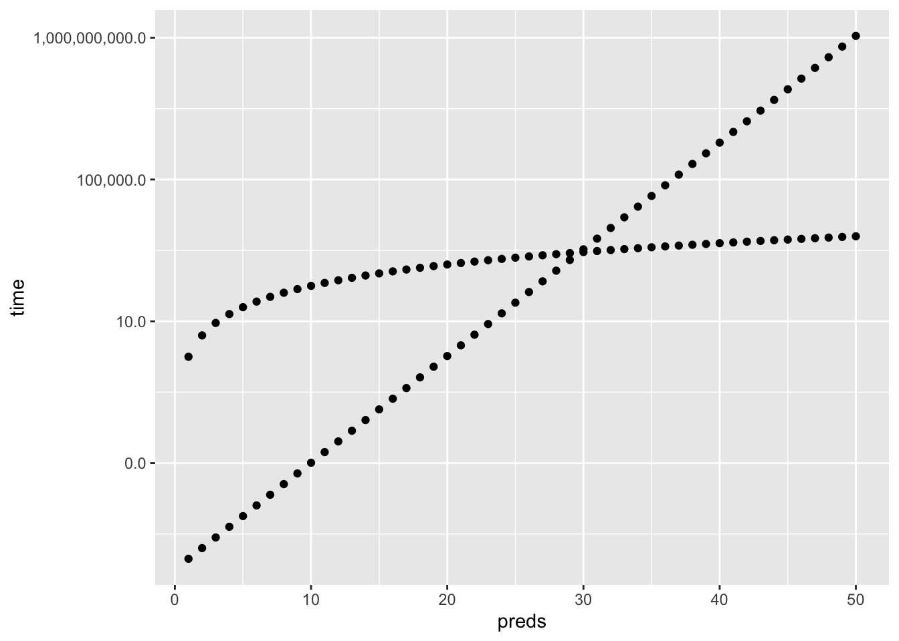

Chapter 4 Classification
4.1 Packages used in this chapter
library(tidyverse)## ── Attaching packages ──────────────────────────────── tidyverse 1.2.1 ──## ✔ ggplot2 3.2.0 ✔ purrr 0.3.2
## ✔ tibble 2.1.3 ✔ dplyr 0.8.3
## ✔ tidyr 0.8.3.9000 ✔ stringr 1.4.0
## ✔ readr 1.3.1 ✔ forcats 0.4.0## ── Conflicts ─────────────────────────────────── tidyverse_conflicts() ──
## ✖ dplyr::filter() masks stats::filter()
## ✖ dplyr::lag() masks stats::lag()library(knitr)
library(kableExtra)##
## Attaching package: 'kableExtra'## The following object is masked from 'package:dplyr':
##
## group_rowslibrary(skimr)##
## Attaching package: 'skimr'## The following object is masked from 'package:kableExtra':
##
## kable## The following object is masked from 'package:knitr':
##
## kable## The following object is masked from 'package:stats':
##
## filterLinear regression in chapter 3 was concerned with predicting a quantitative response variable. What if the response variable is qualitative? Eye color is an example of a qualitative variable, which takes discrete value such as blue, brown, green. These are also referred to as categorical.
The approach of predicting qualitative responses is known as classification. Often, we predict the probability of the occurences of each category of a qualitative variable, and then make a decision based off of that.
In this chapter we discuss three of the most widely-used classifiers:
We discuss more computer-intensive methods in later chapters.
4.2 An Overview of Classification
Classification is a common scenario.
- Person arrives at ER exhibiting particular symptoms. What illness does he have?
- Money is wired to an external account at a bank. Is this fraud?
- Email is sent to your account. Is it legit, or spam?
Similar to regression, we have a set of training observations that use to build a classifier. We also want the classifier to perform well on both training and test observations.
We will use the dataset ISLR::Default. First, let’s convert it to tidy format.
default <- ISLR::Default %>% as_tibble()We are interested in the ability to predict whether an individual will default on their credit card payment, based on their credit card balance and annual income.
First, some summary statistics:
default %>% skimr::skim()## Skim summary statistics
## n obs: 10000
## n variables: 4
##
## ── Variable type:factor ─────────────────────────────────────────────────
## variable missing complete n n_unique top_counts
## default 0 10000 10000 2 No: 9667, Yes: 333, NA: 0
## student 0 10000 10000 2 No: 7056, Yes: 2944, NA: 0
## ordered
## FALSE
## FALSE
##
## ── Variable type:numeric ────────────────────────────────────────────────
## variable missing complete n mean sd p0 p25
## balance 0 10000 10000 835.37 483.71 0 481.73
## income 0 10000 10000 33516.98 13336.64 771.97 21340.46
## p50 p75 p100 hist
## 823.64 1166.31 2654.32 ▅▆▇▆▃▁▁▁
## 34552.64 43807.73 73554.23 ▁▆▆▆▇▅▁▁default %>%
ggplot(aes(x = balance, y = income, fill = default)) +
geom_hex(alpha = 2/3)